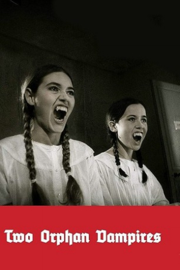

Also known as:Les deux orphelines vampires (original title)
Country:France, 103 minutes
Spoken languages:French
Genres:Horror, Drama
Director(s):Jean Rollin
Writer(s):Jean Rollin, Jean Rollin
Video Codec:Unknown
Number: 2706


Certification:
Storyline:
A pair of teenage girls, who are blind by day, but when the sun goes down, they roam the streets to quench their thirst for blood.
Cast:

Medium: Bluray,
Loaned: No
Aspect ratio: Unknown